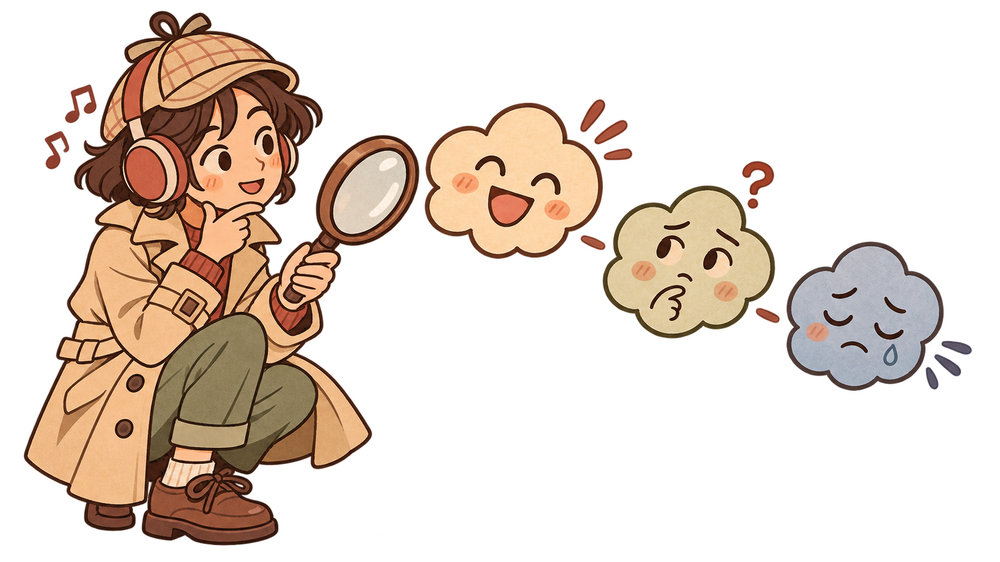

Same sound.
Different story.
Can an image or a caption change the way you hear a song?
情绪侦探：观察自己的理解如何变化。

Watch and listen to the classroom presentation.
Record your impressions here. Continue when the presenters say so.
看投屏、听音乐，在手机上作答；跟随主持人提示进入下一轮。
3 rounds · Around 12 minutes · No correct emotion
No sign-in or name needed. Your notes stay in this browser.
Choose what you feel. There is no correct emotion.
Wait for the presenters before moving on.
等主持人提示后，再进入下一步。
Did the meaning shift?
是声音、画面、字幕，还是自己的经历影响了你？
You can explain why your answer changed or stayed the same. Someone else may interpret the clip differently.
你可以自愿分享理由；不同理解都值得讨论。
A trend has a context.
康熙 (Kangxi) & TOYOKI
A Chinese-language song
A caption can tell a new story. It does not automatically explain the song.
We actively interpret a message. Different people may read the same clip differently.
The title “落泪” means “shedding tears.” It does not require every listener to feel sad.
How could you share this trend while keeping its cultural context visible?
可以讨论：说明歌曲来源、区分情景文案与歌词翻译、避免把一个短视频当成整个中国文化。
The added situational caption in this activity is not a translation of the lyrics. See the presenters’ slides for the specific video and remix credits.
Your choices stay on this device. This page does not collect class-wide votes.